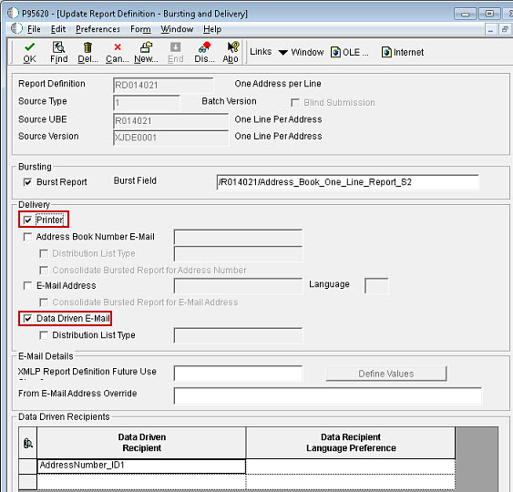

| Goal |
| Solution |
By selecting the BI Publisher delivery options for both "Printer" and "Data-Driven Email", can a report with bursting be sent to an email if there is a valid email address in the report tag field and if the email field is blank, to have this report be printed to the printer instead?

Currently, defining more than one delivery types is possible and will work with Embedded BI Publisher.
If bursting is defined and both "Data-Driven Email" and "Printer" delivery options selected for example, then the bursted output will be emailed to the 'resolved' email address and sent to the printer as well.
However, there is no such functionality available that if the Email address is not specified, the output would then be redirected to the printer. Both delivery options are mutually exclusive and independent. Thus, if both "Data-Driven Email" and "Printer" delivery options is selected, then the bursted output will be printed as well as emailed together if email address is present.
Enhancement Bug 10993304 has been raised to request that the BI Publisher Burst/Delivery Screen to have the option to print immediate to the printer if e-mail address cannot be resolved when bursting.